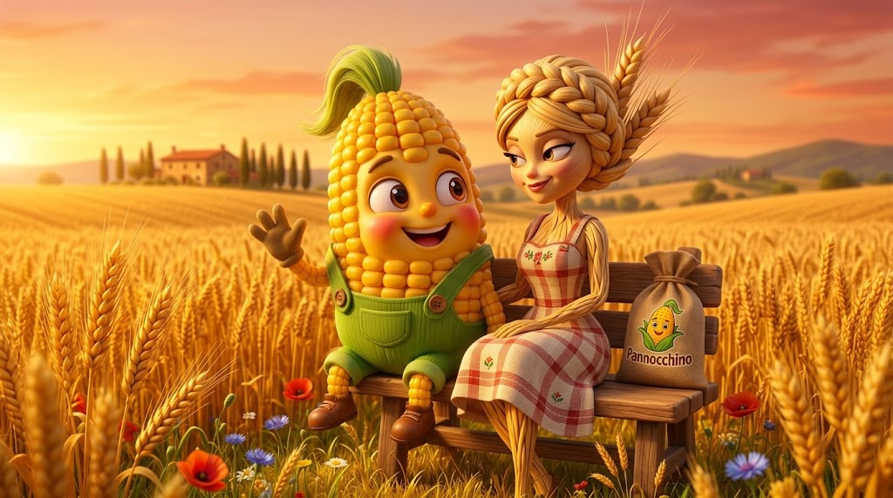
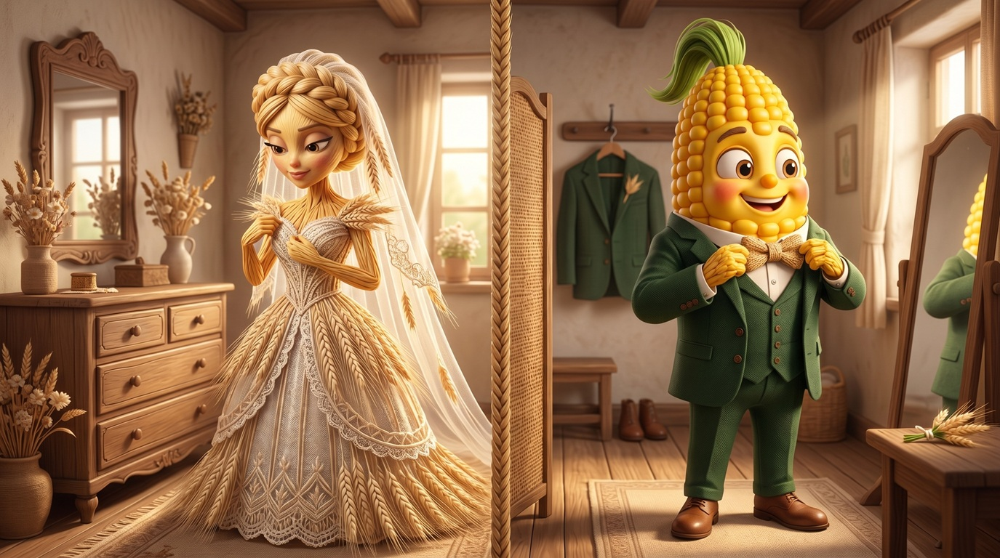
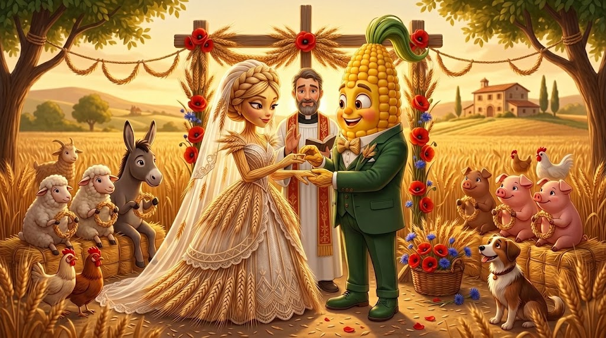
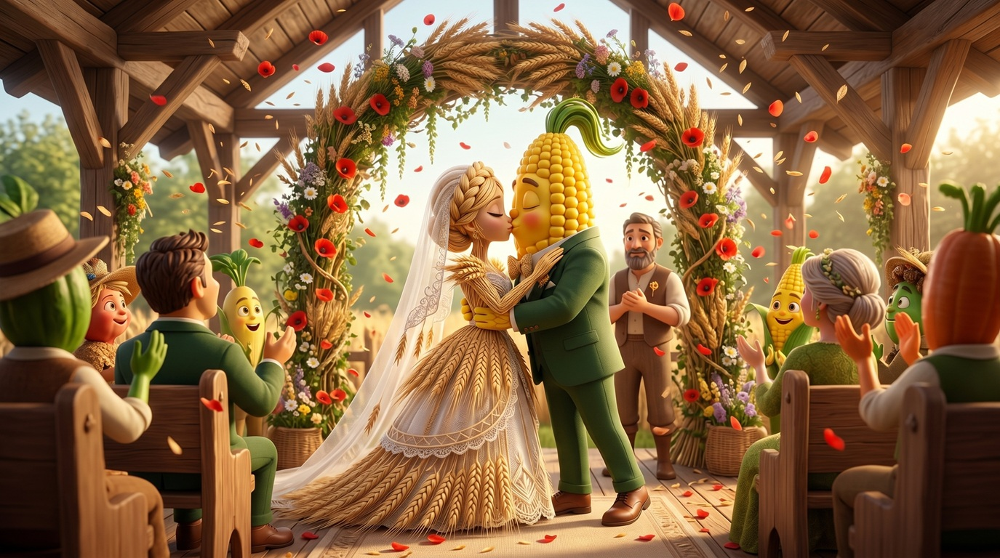
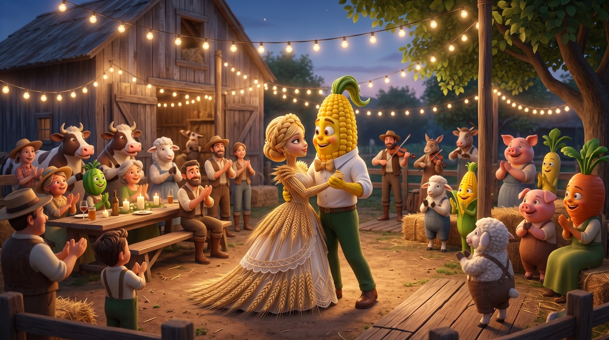
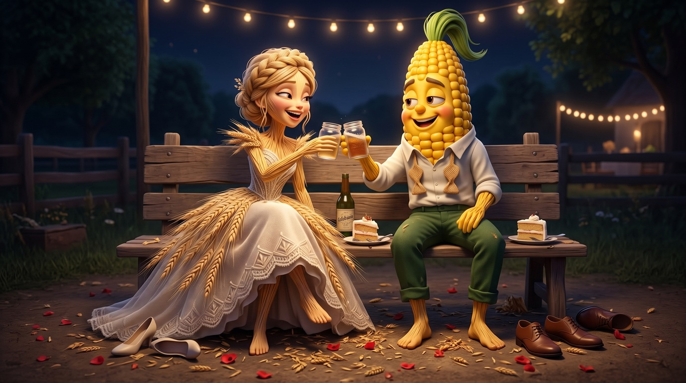
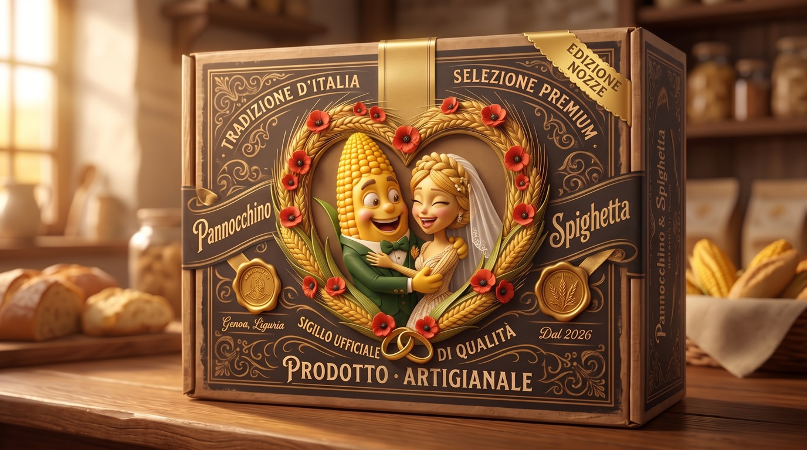
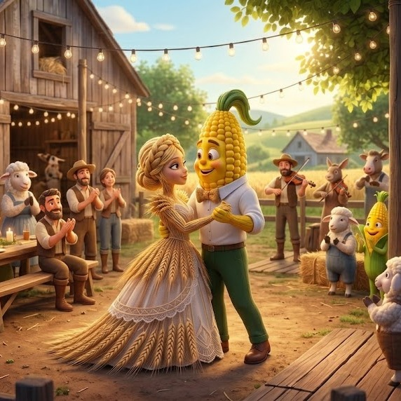
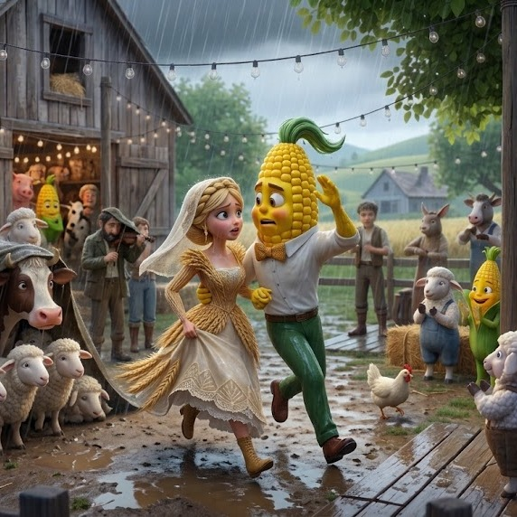
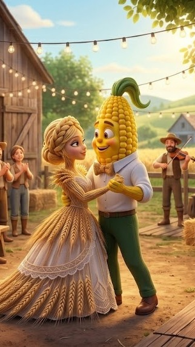

Esempio di Campagna · Pool di Varianti DCO · PANORAMICA
Storyboard Automatico: Ecco Pannocchino e Spighetta
Pannocchino e Spighetta sono due mascotte di fattoria — una pannocchia e una spiga di grano — ideate per questa demo, insieme alla fattoria in cui vivono e ai due prodotti da forno che la fattoria vende. Questo post fissa per la prima volta la loro identità e le conduce attraverso uno storyboard breve ma completo: il loro matrimonio. Lo storyboard introduce un prodotto che vediamo nell'immagine finale della storia: Torta Spighetta, Edizione Nozze, una torta realizzata fondamentalmente con due ingredienti — frumento e mais — in stile Torta Bertolda (o Bertoldina), il classico dolce rustico della tradizione contadina lombarda a base di farina di mais e farina di frumento. Il post gemello, Pannocchino e Spighetta hanno un bambino, riusa la stessa coppia per una seconda storia, la nascita del loro figlio, con un costo marginale di setup quasi nullo. Pannocchino e Spighetta restano un'illustrazione immaginaria: ciò che si vuole dimostrare è il meccanismo (la pipeline) che fa da motore alla storia, non una campagna cliente effettiva. Una precisazione sui ruoli: il brief di queste storie l'ho scritto io dato che il cliente è solo simulato, per mostrare il funzionamento del motore (descritto in Il motore: generazione, controllo, export), che è indipendente dal cast, dagli ambienti, dal brand e dalle storie, che nel flusso operativo sono già stati decisi da altre figure professionali.
Prologo — il frame di riferimento
Tutta la storia che segue è ancorata al singolo scatto Il frame di riferimento, generato con l'AI a partire da una descrizione, o ereditato da creazioni precedenti (per dettagli sul connubio tra Diffusion Model e LLM, usato nei VLM, che generano storie simili, si veda il post tecnico Motore DCO: descrizione tecnica). La stessa immagine è ancorata alla storia gemella della nascita, proposta nel post successivo, Pannocchino e Spighetta hanno un bambino. In pratica questa immagine è sufficiente per definire la morfologia dei personaggi, e le loro posizioni nella storia, mentre il background e gli eventi vengono descritti iterativamente in ogni shot.

Storia — il matrimonio
Un cambio completo di costumi e ambientazione, dall'inizio alla fine — non una semplice variazione di palette sul frame di riferimento. Se il mantenimento d'identità resiste a un abito da sposa, a un completo verde prato, a una pista da ballo e a un dopo-festa a notte fonda, resiste a molti tipi di immagine, come vediamo di seguito.







Altri script che lo stesso setup potrebbe raccontare
Prima di generare lo script della sequenza presentata, gli stessi elementi primitivi — la coppia di riferimento, il campo e la fattoria, la confezione dell'edizione nozze di Torta Spighetta — sono passati attraverso un LLM, che ha abbozzato altri modi di raccontare lo stesso matrimonio. Nessuno di questi è stato poi trasformato in storyboard, tranne la nascita del bebé.
- Una versione con la coppia ormai stabile e innamorata che prepara torte. Nel frattempo nasce un bambino. Ecco l'occasione per preparare e vendere la confezione: edizione prime pappe (vedi Pannocchino e Spighetta hanno un bambino).
- Una versione fuga d'amore — nessun invitato, solo i due e gli animali della fattoria come testimoni, la cerimonia finita prima che chiunque altro si svegli.
- Una versione condizionata dalla pioggia — i due personaggi si spostano nel fienile a metà cerimonia, animali compresi, per verificare se l'identità resiste a un cambio di location dell'ultimo minuto.
- Una versione di rinnovo delle promesse ambientata anni dopo, la stessa corona ora intrecciata con spighe secche invece che fresche, il cast della fattoria più vecchio di una generazione .
- Una variante matrimonio-vendemmia — la cerimonia inserita nella festa del raccolto autunnale invece di restare isolata, zucche e balle di fieno usate anche come decorazione.
- Una versione a un solo testimone — la mucca più vecchia della fattoria come unica invitata, per verificare quanto resista la sensazione di "matrimonio comunitario di fattoria" una volta tolta del tutto la folla.
Il meccanismo della pipeline dietro le quinte — il file di descrizione strutturato che guida ogni sequenza narrativa, e cosa verifica il ciclo di QA su ogni inquadratura — è trattato in Il motore: generazione, controllo, export, tramite LLM per lo script e VLM per lo storyboard.
Ogni inquadratura approvata di questa storia esce come una riga di feed, etichettata per beat, slogan e proporzione: l'export che se ne occupa è il capitolo 06 di Il motore: generazione, controllo, export.
Output simulato del motore — il pool di varianti
Un esempio concreto di cosa produrrebbero davvero le ultime due fasi del motore — proporzioni (capitolo 07) ed export (capitolo 06), vedi Il motore: generazione, controllo, export — a partire da questa storia, nello stesso spirito dell'esempio del brand di dolci in ADV. Partendo dallo scatto del Primo Ballo qui sopra, il motore mette in scena un piccolo pool di varianti etichettate per Torta Spighetta, Edizione Nozze: due slogan («Due specie di cereali, un solo campo d'affetti» e «Diversi per origine, uniti per addolcirci»), ritagliati nelle proporzioni che servirebbero a una campagna reale; l'asse meteo resta confinato alla proporzione quadrata, così la matrice non si moltiplica su ogni taglio. I cinque render qui sotto sono ritagli reali da due scatti effettivi — versione serena e versione di pioggia del primo ballo — ciascuno etichettato con le sue varianti e il suo slogan.

proporzione:1:11 · evento:primo-ballo · meteo:sereno · slogan:campo-affetti«Due specie di cereali, un solo campo d'affetti»

proporzione:1:11 · evento:primo-ballo · meteo:pioggia · slogan:campo-affetti«Due specie di cereali, un solo campo d'affetti»

proporzione:9:162 · evento:primo-ballo · slogan:addolcirci«Diversi per origine, uniti per addolcirci»
Ogni immagine etichettata qui sopra corrisponde esattamente a una riga del manifest descritto nel capitolo 06 di Il motore: generazione, controllo, export — qui simuliamo a mano quella fase di formattazione/export, usando due scatti reali al posto di un pool di render generato.
Export: Manifest report
Gli 11 campi che ogni riga porta con sé (vedi il capitolo 06 di Il motore: generazione, controllo, export per cosa serve ciascuno), compilati per la variante 1:1 soleggiata qui sopra:
asset_id : torta-spighetta-primoballo-campoaffetti-ballo-1x1
brand : Torta Spighetta
product_line : Wedding Edition
story : Pannocchino e Spighetta get married
beat : first-dance
narrative_role : development
cast : Pannocchino, Spighetta
format : 1:1
reserved_zone : bottom 18% strip (y: 0.82–1.00), clear of both faces
variant_labels : [event:first-dance, weather:clear, slogan:campo-affetti]
qa_status : passed first try
review_status : approved
Questo Manifest viene letto e utilizzato da una piattaforma di ad-serving/DCO — il livello di AD trafficking (Meta, Google/DV360, o un DSP proprietario dell'agenzia) che pubblica effettivamente gli annunci. Legge variant_labels e format per scegliere la riga giusta per ogni slot di consegna e regola di targeting; il motore del nostro tool non dialoga mai direttamente con la piattaforma ADV, solo attraverso questo Manifest.
- Quadrato (1:1) — la proporzione classica del feed Instagram/Facebook, usato anche dai pin di Pinterest e dallo slot quadrato del Google Display. ↩
- Verticale (9:16) — video verticale a schermo intero: Stories e Reels di Instagram/Facebook, TikTok, YouTube Shorts, Snapchat. ↩
- Widescreen (16:9) — pre-roll/in-stream di YouTube, link ads di Facebook e LinkedIn, e la maggior parte dell'inventory CTV/display programmatico. ↩
- Verticale (4:5) — la proporzione feed più alta di Instagram e Facebook, oggi l'opzione predefinita consigliata per gli annunci a singola immagine su entrambe le piattaforme. ↩